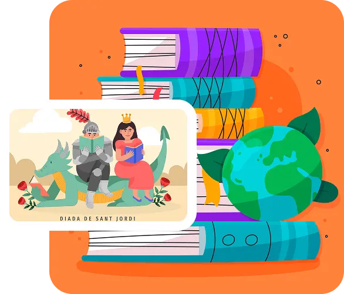

Fundada en la década de 1950 como parte de la expansión educativa rural en Jalisco, la Escuela Primaria Emiliano Zapata surgió para honrar al héroe de la Revolución Mexicana y brindar acceso a la educación básica en la comunidad de Yahualica de González Gallo.

Somos una escuela primaria que garantiza a todos los niños y las niñas, el desarrollo de competencias básicas para la vida, la práctica de valores, el disfrute de las artes, el ejercicio físico, el deporte, lo establecido en el plan y programas de estudio vigentes y los demás preceptos establecidos en el artículo 3° constitucional y la ley general de educación.
Ser la institución que oferte una educación de calidad. reconocida por: la continua preparación y desempeño profesional de su equipo de trabajo; la utilización de las nuevas tecnologías en el servicio educativo y por su relación colaborativa, sostenida en tres valores esenciales:
Inspirados en Zapata, promovemos la equidad y el apoyo a los más vulnerables.
Fomentamos el respeto mutuo, la tolerancia y el cuidado del medio ambiente y de nuestra comunidad escolar.
Buscamos la mejora continua en el aprendizaje, la disciplina y el esfuerzo diario de alumnos y maestros.